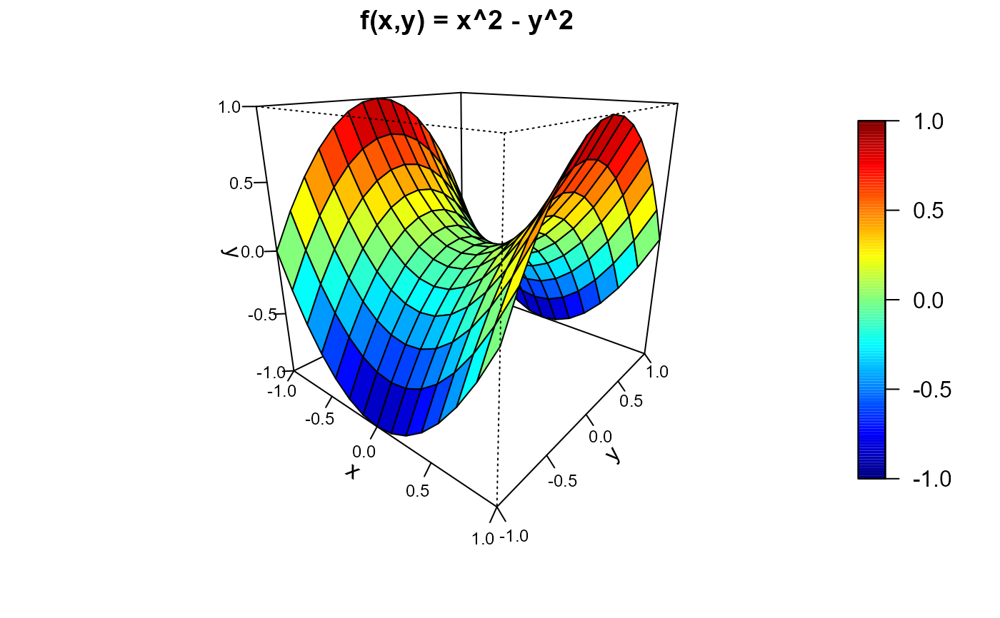

Defines data on a full regular (spatial) grid.
Constructor function of the data.grid-class.
data.grid(
...,
grid = NULL,
window = NULL,
mask = NULL,
set.NA = FALSE,
warn = FALSE
)vectors or arrays of data with length equal to prod(grid$n).
spatial window (values outside this window will be masked), currently an sp-object of class
extending SpatialPolygons.
logical; vector (or array) indicating the selected values (not masked).
logical; If TRUE, the values corresponding
to masked cells are set to NA.
logical; If TRUE a warning message is generated when original data is masked.
If parameter grid.par is not specified it is set from first argument.
S3 "version" of the SpatialGridDataFrame-class
of the sp package.
# Grid parameters
grid <- grid.par(n = c(15,15), min = c(x = -1, y = -1), max = c(1, 1))
coordinates <- coords(grid)
plot(coordinates)
coordvs <- coordvalues(grid)
abline(v = coordvs[[1]], lty = 3)
abline(h = coordvs[[2]], lty = 3)
# Gridded data
y <- apply(coordinates, 1, function(x) x[1]^2 - x[2]^2 )
datgrid <- data.grid(y = y, grid = grid)
spersp(datgrid, main = 'f(x,y) = x^2 - y^2')

dim(datgrid)
#> [1] 15 15
all.equal(coordinates, coords(datgrid))
#> [1] TRUE